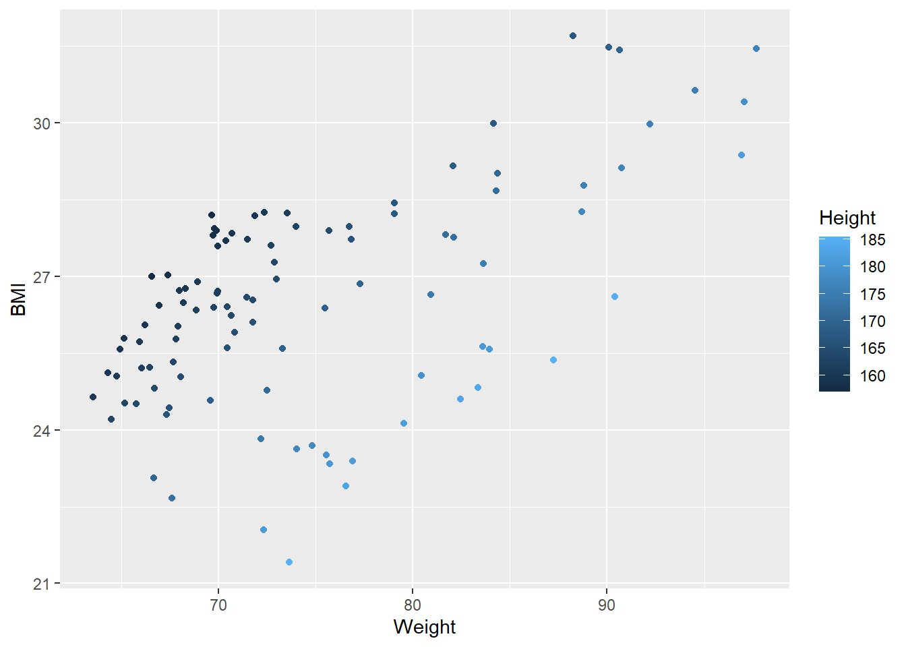
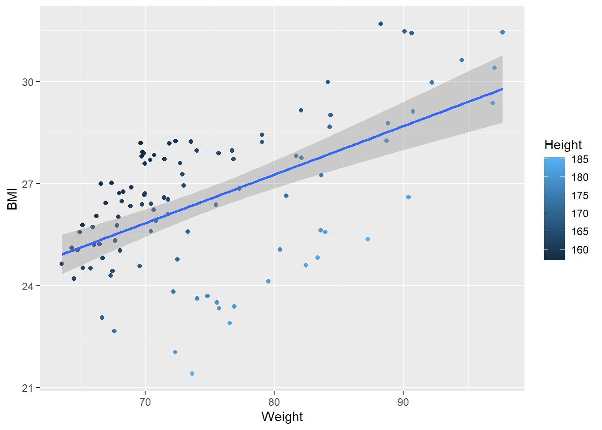
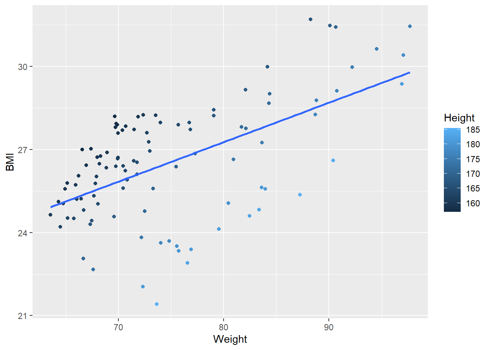
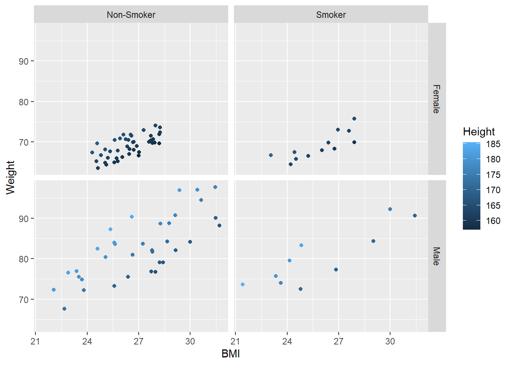
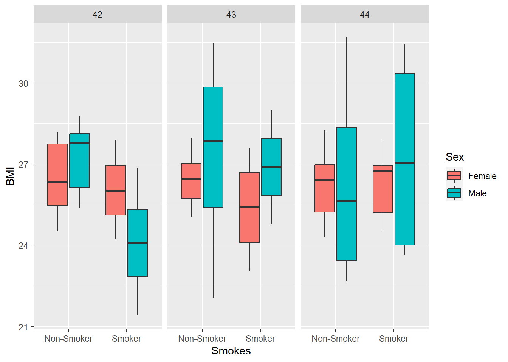
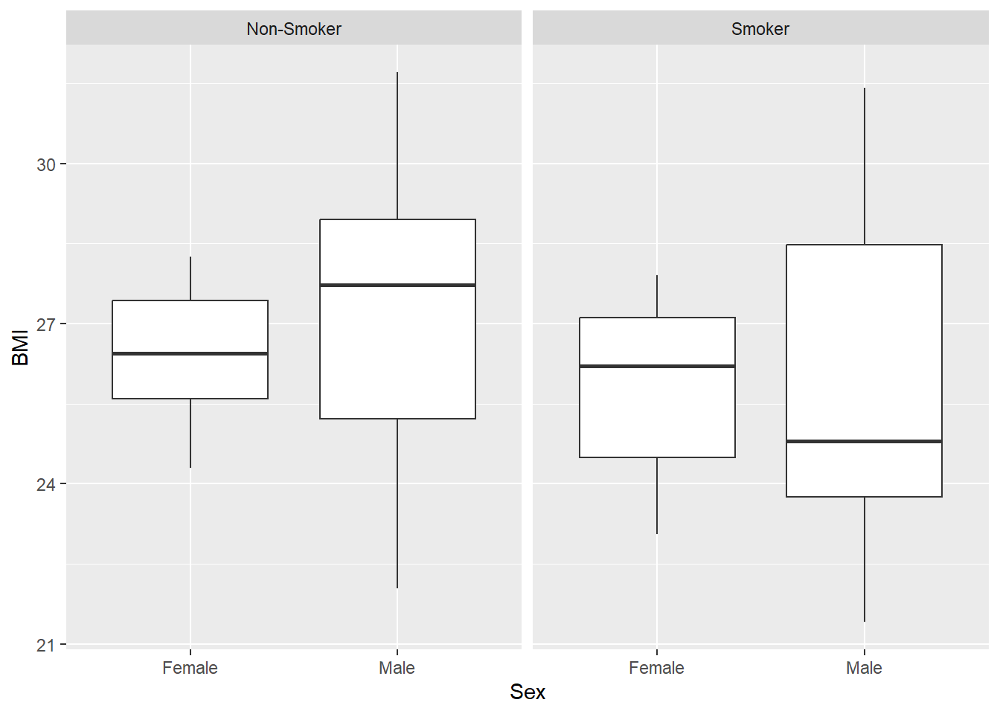
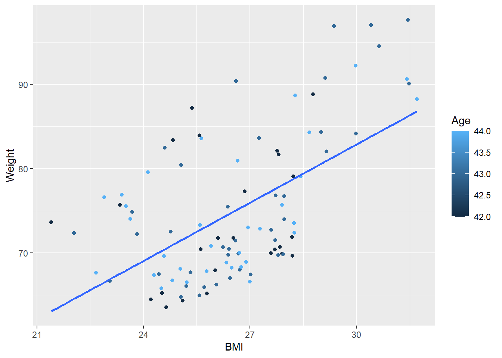
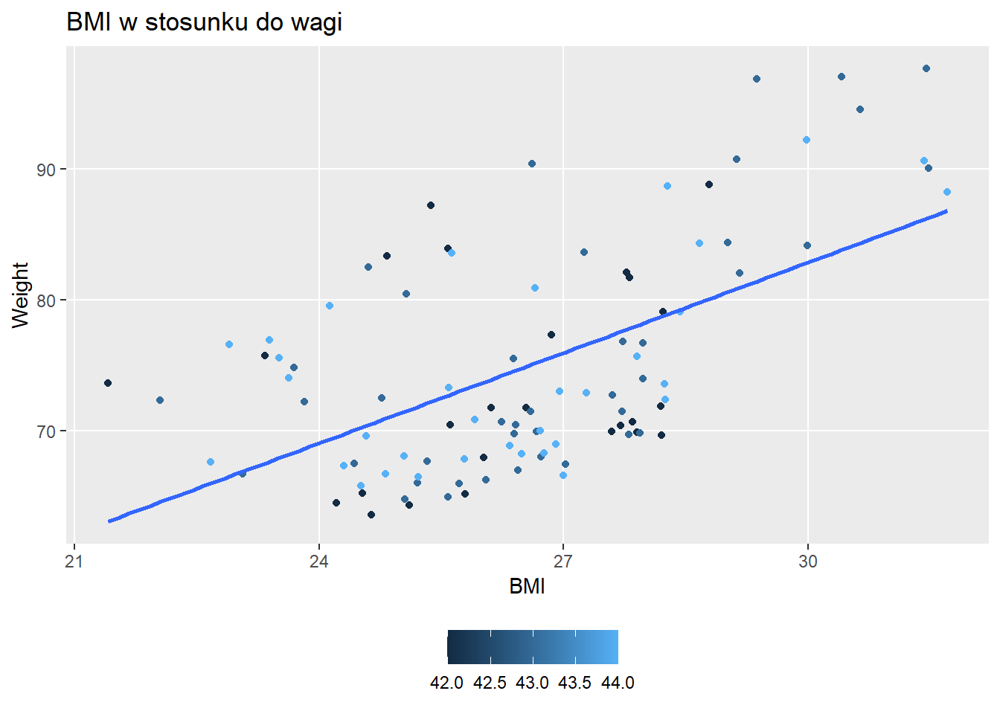

── Attaching core tidyverse packages ──────────────────────── tidyverse 2.0.0 ──
✔ dplyr 1.1.3 ✔ readr 2.1.4
✔ forcats 1.0.0 ✔ stringr 1.5.0
✔ ggplot2 3.4.4 ✔ tibble 3.2.1
✔ lubridate 1.9.3 ✔ tidyr 1.3.0
✔ purrr 1.0.2
── Conflicts ────────────────────────────────────────── tidyverse_conflicts() ──
✖ dplyr::filter() masks stats::filter()
✖ dplyr::lag() masks stats::lag()
ℹ Use the conflicted package (<http://conflicted.r-lib.org/>) to force all conflicts to become errors
patients <-read_tsv("patient-data-cleaned.txt")
Rows: 100 Columns: 15
── Column specification ────────────────────────────────────────────────────────
Delimiter: "\t"
chr (5): ID, Name, Sex, Smokes, State
dbl (6): Height, Weight, Grade, Score, Age, BMI
lgl (2): Died, Overweight
date (2): Birth, Date.Entered.Study
ℹ Use `spec()` to retrieve the full column specification for this data.
ℹ Specify the column types or set `show_col_types = FALSE` to quiet this message.
show_example <-head(patients,3)show_example
ID
Name
Sex
Smokes
Height
Weight
Birth
State
Grade
Died
Score
Date.Entered.Study
Age
BMI
Overweight
AC/AH/001
Michael
Male
Non-Smoker
182.87
76.57
1972-02-06
Georgia
2
FALSE
0.01
2015-12-01
44
22.90
FALSE
AC/AH/017
Derek
Male
Non-Smoker
179.12
80.43
1972-06-15
Colorado
2
FALSE
-1.31
2015-12-01
43
25.07
TRUE
AC/AH/020
Todd
Male
Non-Smoker
169.15
75.48
1972-07-09
New Jersey
2
FALSE
-0.17
2015-12-01
43
26.38
TRUE
Wykresy punktowe (scatterplot)
Narysuj wykres punktowy wagi pacjenta w funkcji BMI (w estetyce globalnej) i pokoloruj punkty w oparciu o wzrost (w estetyce lokalnej).
ggplot(data = patients,mapping =aes(x = Weight, y = BMI, color = Height) ) +geom_point()

Za pomocą dodatkowego geoma dopasuj gładką linię określającą trend.
ggplot(data = patients,mapping =aes(x = Weight, y = BMI, color = Height) ) +geom_point() +geom_smooth(method ='lm')
`geom_smooth()` using formula = 'y ~ x'

Czy dopasowanie z poprzedniego wykresu wygląda dobrze? Spójrz na stronę pomocy dla geom_smooth i dostosuj metodę tak, aby pasowała do linii prostej i nie rysowała przedziału ufności.
ggplot(data = patients,mapping =aes(x = Weight, y = BMI, color = Height) ) +geom_point() +geom_smooth(method ='lm', se=FALSE)
`geom_smooth()` using formula = 'y ~ x'
Warning: The following aesthetics were dropped during statistical transformation: colour
ℹ This can happen when ggplot fails to infer the correct grouping structure in
the data.
ℹ Did you forget to specify a `group` aesthetic or to convert a numerical
variable into a factor?

Wykresy pudełkowe
Wygeneruj wykres pudełkowy zmiennej Score porównując palaczy i niepalących
Porównaj histogram z estymatorem jądrowym na jednym wykresie. Ustaw przeźroczystość histogramu (alpha) na 20%. Dlaczego wysokości wykresów są różne? Ustaw estetykę globalną wykresu tak, aby ujednolicić pionową oś (wskazówka: użyj funkcji after_stat() z odpowiednim argumentem)
Narysuj wykres punktowy wagi pacjenta w funkcji BMI i pokoloruj punkty w oparciu o wzrost. Podziel go na siatkę wykresów (kafelki) w oparciu o płeć i palenie papierosów.
ggplot(data = patients, mapping =aes(x = BMI, y = Weight, color = Height)) +geom_point() +facet_grid(Sex ~ Smokes)

Wygeneruj wykres pudełkowy BMI porównując palących i niepalących, pokolorowanych ze względu na płeć i dodaj osobny kafelek ze względu na wiek.
ggplot(data = patients, mapping =aes(x = Smokes, y = BMI, fill = Sex)) +geom_boxplot() +facet_wrap(~ Age)

Utwórz podobny boxplot BMI, ale tym razem pogrupuj dane ze względu na płeć, pokoloruj ze względu na wiek (wskazówka:przekształć kolor do zmiennej kategorycznej) a kafelki ze względu na to kto jest osobą palącą.
ggplot(data = patients, mapping =aes(x = Sex, y = BMI, fill = Age)) +geom_boxplot() +facet_wrap(~ Smokes)

Skale
Narysuj wykres punktowy wagi pacjenta w funkcji BMI.
Zaczynając od poprzedniego wykresu dostosuj oś BMI tak aby zaznaczone byly tylko wartości 20, 30, 40 a na osi wagi wartości od 60 do 100 ze skokiem 5. Dodaj polską nazwę zmiennej i jednostkę (kg).
Narysuj wykres punktowy wagi pacjenta w funkcji BMI. Pokoloruj go w skali kolorowej ze względu na wzrost. Utwórz skalę kolorystyczną z punktem środkowym odpowiadającym średniemu wzrostowi pacjenta zaś ekstremami skali mają być zielony (minimum) i czerwony (maksimum) w odcieniach zgodnych z kolorami AGH. Jako środkowy kolor przyjąć szarość grey
Narysuj wykres punktowy wagi pacjenta w funkcji BMI. Pokoloruj go w skali kolorowej ze względu na wzrost. Dodaj do niego linie trendu bez przedziałów ufności dla każdej z grup wiekowych
ggplot(data = patients, mapping =aes(x = BMI, y = Weight, colour = Age)) +geom_point() +geom_smooth(method ="lm", se =FALSE)
`geom_smooth()` using formula = 'y ~ x'

Usuń tytuł legendy. Zmień kolory tła pozycji legendy (key) na biało i umieść legendę pod wykresem.
Dodaj odpowiedni tytuł do wykresu. Usuń pomniejsze linie siatki. Zapisz jako plik png o wymiarach 16 na 16 cm.
ggplot(data = patients, mapping =aes(x = BMI, y = Weight, colour = Age)) +geom_point() +geom_smooth(method ="lm", se =FALSE) +theme(legend.title =element_blank(),legend.key =element_rect(fill ="white"),legend.position ="bottom",panel.grid.minor =element_blank() ) +labs(title ="BMI w stosunku do wagi")
`geom_smooth()` using formula = 'y ~ x'

ggsave("BMI_a_Waga.png", units ="in", height =16, width =16)
`geom_smooth()` using formula = 'y ~ x'
Source Code
---title: "Zadanie 8. Wprowadzenie do ggplot2"author: "Gabriel Szewczyk"date: 12.05.2023format: html: page-layout: full code-fold: false code-tools: true code-line-numbers: true fontsize: 18pt df-print: kableeditor: visual---## Załadowanie paczek i zbioru danych```{r load, warning=FALSE}library(tidyverse)patients <-read_tsv("patient-data-cleaned.txt")show_example <-head(patients,3)show_example```## Wykresy punktowe (scatterplot)1. Narysuj wykres punktowy wagi pacjenta w funkcji BMI (w estetyce globalnej) i pokoloruj punkty w oparciu o wzrost (w estetyce lokalnej).```{r BMI}ggplot(data = patients,mapping =aes(x = Weight, y = BMI, color = Height) ) +geom_point()```2. Za pomocą dodatkowego geoma dopasuj gładką linię określającą trend.```{r trend, warning = FALSE}ggplot(data = patients,mapping =aes(x = Weight, y = BMI, color = Height) ) +geom_point() +geom_smooth(method ='lm')```3. Czy dopasowanie z poprzedniego wykresu wygląda dobrze? Spójrz na stronę pomocy dla geom_smooth i dostosuj metodę tak, aby pasowała do linii prostej i nie rysowała przedziału ufności.```{r smooth}ggplot(data = patients,mapping =aes(x = Weight, y = BMI, color = Height) ) +geom_point() +geom_smooth(method ='lm', se=FALSE)```## Wykresy pudełkowe1. Wygeneruj wykres pudełkowy zmiennej Score porównując palaczy i niepalących```{r boxplot}ggplot(data = patients,mapping =aes(x = Smokes, y = Score) ) +geom_boxplot()```2. Za pomocą kolorów rozdziel wykresy pudełkowe dodatkowo ze względu na płeć.```{r divide_boxes}ggplot(data = patients,mapping =aes(x = Smokes, y = Score, fill=Sex) ) +geom_boxplot() +scale_fill_manual(values =c("red", "blue")) +labs(title ='Wykres pudełkowy w oparciu o płeć')```## Histogramy i estymatory jądrowe1. Wygeneruj histogram BMI kolorując każdy słupek na niebiesko. Dobierz odpowiednią szerokość przedziałów (binów). Swój wybór uzasadnij.```{r bar_chart, warning = FALSE}ggplot(data = patients,mapping =aes(x = BMI) ) +geom_histogram(fill ="blue", binwidth =1)```2. Zamiast histogramu wygeneruj wykres estymatora jądrowego.```{r kernel}ggplot(data = patients, mapping =aes(x=BMI)) +geom_density()```3. Porównaj histogram z estymatorem jądrowym na jednym wykresie. Ustaw przeźroczystość histogramu (alpha) na 20%. Dlaczego wysokości wykresów są różne? Ustaw estetykę globalną wykresu tak, aby ujednolicić pionową oś (wskazówka: użyj funkcji after_stat() z odpowiednim argumentem)```{r kernel_compare}# TODOggplot(data = patients,mapping =aes(x = BMI), after_stat) +geom_histogram(aes(y =after_stat(density)), fill ="blue", binwidth =1, alpha =0.2) +geom_density() ```*Wartości wykresów są różne, ponieważ estymator jądrowy to funkcja gęstości prawdopodobieństwa której całka jest równa 1.*4. Wygeneruj wykresy estymatorów jądrowych BMI pokolorowane ze względu na płeć (kolor wypełnienia). Dobierz odpowiednią przeźroczystość.```{r kernel_charts}ggplot(data = patients, mapping =aes(x = BMI, fill = Sex)) +geom_density(aes(fill=Sex), alpha =0.2)```## Kafelki1. Narysuj wykres punktowy wagi pacjenta w funkcji BMI i pokoloruj punkty w oparciu o wzrost. Podziel go na siatkę wykresów (kafelki) w oparciu o płeć i palenie papierosów.```{r weight_to_bmi}ggplot(data = patients, mapping =aes(x = BMI, y = Weight, color = Height)) +geom_point() +facet_grid(Sex ~ Smokes)```2. Wygeneruj wykres pudełkowy BMI porównując palących i niepalących, pokolorowanych ze względu na płeć i dodaj osobny kafelek ze względu na wiek.```{r box_chart_bmi}ggplot(data = patients, mapping =aes(x = Smokes, y = BMI, fill = Sex)) +geom_boxplot() +facet_wrap(~ Age)```3. Utwórz podobny boxplot BMI, ale tym razem pogrupuj dane ze względu na płeć, pokoloruj ze względu na wiek (wskazówka:przekształć kolor do zmiennej kategorycznej) a kafelki ze względu na to kto jest osobą palącą.```{r boxplot_bmi, warning = FALSE}ggplot(data = patients, mapping =aes(x = Sex, y = BMI, fill = Age)) +geom_boxplot() +facet_wrap(~ Smokes)```## Skale1. Narysuj wykres punktowy wagi pacjenta w funkcji BMI.```{r point_weight_bmi}ggplot(data = patients, mapping =aes(x = Weight, y = BMI)) +geom_point()```2. Zaczynając od poprzedniego wykresu dostosuj oś BMI tak aby zaznaczone byly tylko wartości 20, 30, 40 a na osi wagi wartości od 60 do 100 ze skokiem 5. Dodaj polską nazwę zmiennej i jednostkę (kg).```{r bmi_axis}ggplot(data = patients, mapping =aes(x = BMI, y = Weight)) +geom_point() +scale_x_continuous(breaks =c(20, 30, 40)) +scale_y_continuous(breaks =c(60, 100, by =5),name ="Weight [kg]")```3. Narysuj wykres punktowy wagi pacjenta w funkcji BMI. Pokoloruj go w skali kolorowej ze względu na wzrost. Utwórz skalę kolorystyczną z punktem środkowym odpowiadającym średniemu wzrostowi pacjenta zaś ekstremami skali mają być zielony (minimum) i czerwony (maksimum) w odcieniach zgodnych z kolorami AGH. Jako środkowy kolor przyjąć szarość grey```{r points_weight}ggplot(data = patients, mapping =aes(x = BMI, y = Height, colour = Height)) +geom_point() +scale_colour_gradient2(low ="green", high ="red", mid ="grey", midpoint =mean(patients$Height))```## Motywy1. Narysuj wykres punktowy wagi pacjenta w funkcji BMI. Pokoloruj go w skali kolorowej ze względu na wzrost. Dodaj do niego linie trendu bez przedziałów ufności dla każdej z grup wiekowych```{r themes_1, warning=FALSE}ggplot(data = patients, mapping =aes(x = BMI, y = Weight, colour = Age)) +geom_point() +geom_smooth(method ="lm", se =FALSE)```2. Usuń tytuł legendy. Zmień kolory tła pozycji legendy (key) na biało i umieść legendę pod wykresem.```{r themes_2, warning=FALSE}ggplot(data = patients, mapping =aes(x = BMI, y = Weight, colour = Age)) +geom_point() +geom_smooth(method ="lm", se =FALSE) +theme(legend.title =element_blank(),legend.key =element_rect(fill ="white"),legend.position ="bottom" )```3. Dodaj odpowiedni tytuł do wykresu. Usuń pomniejsze linie siatki. Zapisz jako plik png o wymiarach 16 na 16 cm.```{r themes_3, warning=FALSE}ggplot(data = patients, mapping =aes(x = BMI, y = Weight, colour = Age)) +geom_point() +geom_smooth(method ="lm", se =FALSE) +theme(legend.title =element_blank(),legend.key =element_rect(fill ="white"),legend.position ="bottom",panel.grid.minor =element_blank() ) +labs(title ="BMI w stosunku do wagi")ggsave("BMI_a_Waga.png", units ="in", height =16, width =16)```